Kubernetes
Deploy, expose, inspect, scale, and troubleshoot containerised workloads using
Kubernetes
.
🎯 Objective
In this lab, we will apply what we have learned about
Kubernetes
(K8s) to create a cluster in cloud environments.
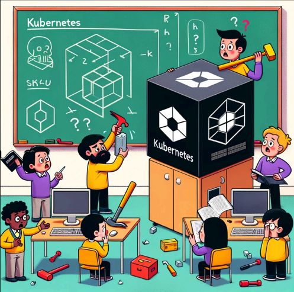
🧭 Kubernetes lab overview
Let's get started! Let's go through a few exercises to practice commands of
Kubernetes
, specifically
kubectl
and minikube.
Mental-model checkpoint: How would you map a Docker image and container to Kubernetes Pods, Deployments, and Services? Which Kubernetes object maintains replicas, and which provides a stable network endpoint?
📚 1. Recommended reading: Kubernetes basics
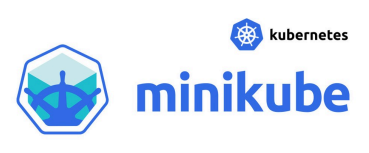
One of the best materials to start learning
Kubernetes
is from Google.
Open this link: https://kubernetes.io/docs/tutorials/kubernetes-basics/ . Please read through six of these basic Kubernetes modules!
-
Create a Kubernetes cluster
-
Deploy an app
-
Explore your app
-
Expose your app publicly
-
Scale up your app
-
Update your app
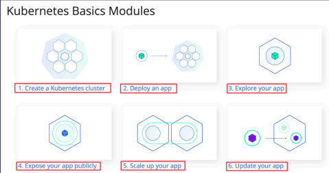
After completing the reading, let's up our game and set up some projects like a to-do list app or a voting app examples with Kubernetes in the next lab section.
🚀 2. Deploy a to-do application with Minikube
This second section will focus around
minikube
, which is a single-node
Kubernetes
local cluster, focusing on making it easy to learn and practice Kubernetes.
☁️ Create the Minikube server on EC2
Minikube
has
specific
system
requirements
. At a minimum, it requires
2
CPUs
and
2GB
of
memory
, but for more comfortable operation and to run actual workloads, you should aim for at least 2 CPUs and 4GB of memory.
Troubleshooting checkpoint: If this EC2 instance has too little memory, which symptoms might look like an application bug? Which kubectl observations could reveal resource pressure instead?
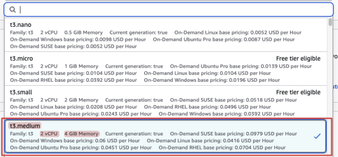
Let’s set up the
EC2
instance for “minikube" Server like so.
Here
are
the
settings
of
the
Minikube
for
EC2:
-
Name: Minikube
-
OS: default Amazon Linux AMI (Free-tier)
-
Instance Type: t3.medium (2 vCPU + 4GB RAM)
-
Important: This instance type is required to meet Minikube's system requirements but is not part of the
AWSFree Tier. Running this EC2 instance will incur costs on your AWS account.
-
-
Key pair: select and reuse your old key in other labs (
devops_project_key) -
Storage: Default 8 GB is plenty enough!
-
Security Group:
-
Optional Name:
Minikube_Security_Group -
Source Type: Anywhere
-
Open two ports:
-
22 for SSH
-
3000-32767:
-
30000-32767 for Minikube (In
Kubernetes, aNodePortserviceis a way to expose a service on a port of the node (a machine running Kubernetes). The default port range for NodePortservicesis 30000 -
-
A NodePort service can use any port in that range.
-
-
-
Minikube follows the same NodePort convention.
-
In this lab, the explicit port-forward examples use only ports 3000, 3001, and 3002. Restrict security-group sources to your own IP whenever possible instead of exposing this entire range publicly.
📦 Install Minikube, kubectl, and dependencies
-
[Optional] For some general ideas how we can get these installation done, please read through these guides:
-
https://minikube.sigs.k8s.io/docs/start/ (
Minikubeinstallation) -
https://kubernetes.io/docs/tasks/tools/install-kubectl-linux/ (
kubectlinstallation) -
https://minikube.sigs.k8s.io/docs/drivers/docker/ (docker installation)
-
-
To keep things simple without dealing with permission, let’s login as a root user and change our current directory to /root:
sudo su --
You are now the root user and have unrestricted system privileges. You can check your current directory, which should tell you that you are at root directory:
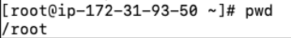
-
Installing kubectl is essential for learning Minikube because it provides the necessary command line tool to interact with your Minikube
Kubernetescluster, allowing you to deploy and manage applications effectively. -
Let’s Install kubectl binary with curl. It does so by first retrieving the version number from the stable release URL, then using it to compose the download URL for the specific kubectl binary needed for Linux:
curl -LO "https://dl.k8s.io/release/$(curl -L -s https://dl.k8s.io/release/stable.txt)/bin/linux/amd64/kubectl"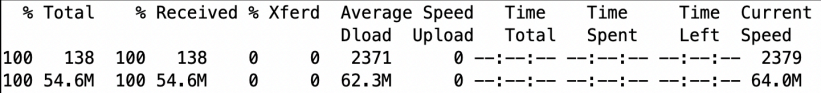
-
Installs the kubectl program with owner and group set to root, and permissions set to 0755, placing it in the
/usr/local/bindirectory for system-wide use:
sudo install -o root -g root -m 0755 kubectl /usr/local/bin/kubectl-
Test if the installation is done correctly by checking the version information of the kubectl:
kubectl version --client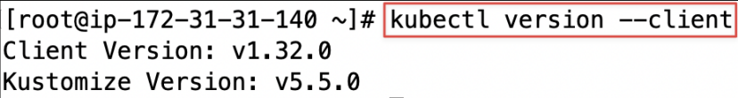
-
Minikube is a tool that creates a local Kubernetes cluster on your machine, and it requires
Dockerto run the containers that make up the nodes of the cluster. Therefore, we need to install docker first!
yum install docker -y-
Start docker!
service docker start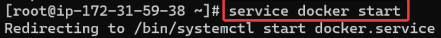
-
Check if docker has started:
service docker status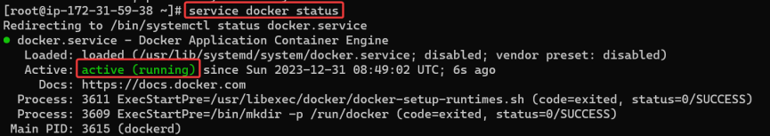
-
Uses curl to fetch the latest Minikube release for Linux and saves it with its original name:
curl -LO https://storage.googleapis.com/minikube/releases/latest/minikube-linux-amd64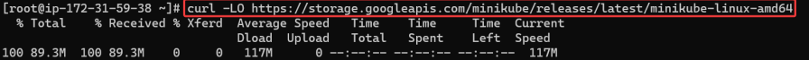
-
Install the Minikube binary as 'minikube' in the '
/usr/local/bin' directory, granting it system-wide access for all users:
sudo install minikube-linux-amd64 /usr/local/bin/minikube-
Now, we are ready! Let's start a local Kubernetes cluster (Minikube):
minikube start --force
The reason we use “
--force
” is because we want to run minikube as a root user!
-
minikube status:
minikube status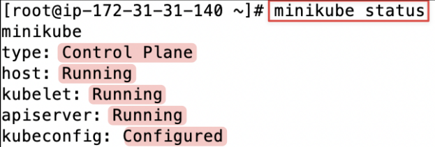
[Explanation] The Control Plane, host, kubelet, and apiserver components are all active, and the kubectl configuration is properly set up, meaning the cluster is ready to be used for Kubernetes operations.
-
Lists all the
podsin allnamespacesof a Kubernetes cluster. :
kubectl get po -A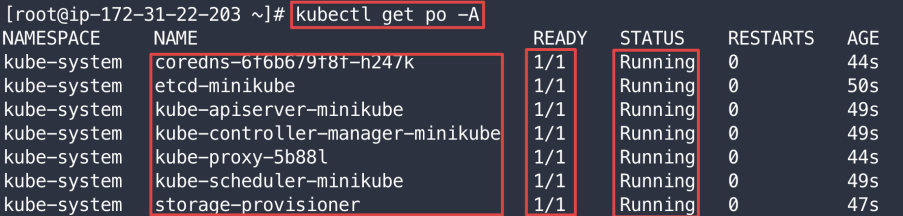
[Explanation]
The
-A
flag (short for
--all-namespaces
) tells kubectl to list pods from all namespaces in the cluster. In a new Minikube cluster, the only pods running are the essential system components, which reside in the
kube-system
namespace
. The output confirms that core components like CoreDNS, etcd, the API server, and the scheduler are all in a healthy Running state, with their containers ready (1/1). This means our cluster is operational.
The output shows the core components of the Kubernetes control plane.
-
Let’s initiates a new Kubernetes
podnamed 'todolistapp' using the 'tomhuynhsg/react-todo-list-app'Docker Hubimage to deploy a React-based to-do list application:
kubectl run todolistapp --image=tomhuynhsg/react-todo-list-app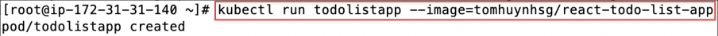
-
View the Pod:
kubectl get pods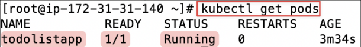
A Kubernetes Pod is a group of one or more Containers, tied together for the purposes of administration and networking. The Pod in this tutorial has only one Container.
-
View cluster events:
kubectl get events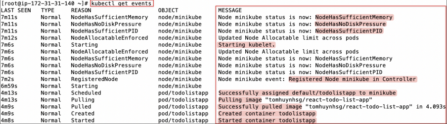
This shows a list of system pods in the 'kube-system' namespace, all of which are currently in a 'Running' status, indicating a healthy state for these core components of the cluster.
-
By default, the Pod is reachable only by its internal cluster IP address. To make the to-do application accessible from outside the Kubernetes virtual network, you have to expose the Pod as a Kubernetes
Service. -
Expose the Pod using the kubectl expose command. Let’s create a new service named 'todolistapp-service' that exposes the 'todolistapp' pod on a network, accessible via a
NodePortatport 80, allowing external access to the application:
kubectl expose pod todolistapp --type=NodePort --port=80 --name=todolistapp-service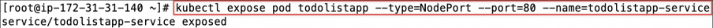
[Explanation] NodePort: This type makes your service accessible on a static port on each node's IP in the Kubernetes cluster. It allocates a port from a range (default is 30000-32767), and any traffic sent to this port on any node is forwarded to the service. In short, NodePort is a simple way to get external traffic into your cluster, typically for development or small-scale environments.
-
Let’s retrieve the list of
servicesyou created:
kubectl get services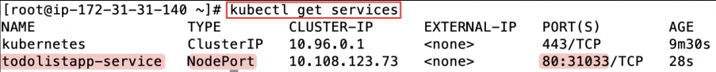
[Explanation]
It shows
80:
32449/TCP
, meaning the service is listening on
port
80
within
the
cluster
, and it has been mapped to
port
32449
on
all
nodes'
IP
addresses
. External traffic that hits any node on
port 32449
will be forwarded to this service on
port 80
.
-
Similarly, you can use “kubectl get svc” instead of “kubectl get services” as “svc” is simply an alias or shorthand for services in the kubectl command:
kubectl get svc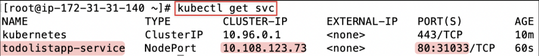
Let’s focus on the todolistapp-service only!
-
Let's list the service of todolistapp-service:
kubectl get services todolistapp-service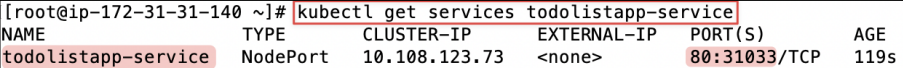
-
Let’s retrieve the URL of the 'todolistapp-service' service running in your local Minikube environment, allowing you to interact with your app via a URL:
minikube service todolistapp-service --url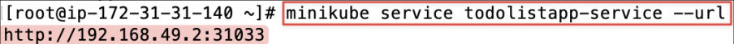
-
Let’s make an HTTP request to a web service running on a Minikube cluster to test if the website is actually working:
curl <the-website-url>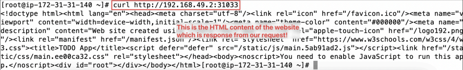
The HTML code displayed is the actual content of the homepage that a web browser would render for a user.
The
Problem
: Even though you can fetch the website content via curl command internally, you would not be able to access the website via the public IP address of
EC2
via the expose
port 32449
on the browser. You can try to do that by opening the URL:
<your-public-ip-of-ec2>
:
<export-port-of-service>
on your browser then you will realize it will not respond to any website unlike the result of curl.
Explanation:
A successful local curl request does not guarantee that the same NodePort is reachable from outside the EC2 instance:
-
Minikube Environment : Minikube is designed to be a local Kubernetes environment. When you expose a service in Minikube, it's typically only accessible within the VM or the environment where Minikube is running. The service todolistapp-service is exposed on a NodePort within the Minikube's virtual network, which is not directly accessible from the public internet.
-
Public IP Address : Your EC2 instance has a public IP, but the Minikube cluster and its services have their own set of private IPs that are not directly exposed to the internet. Even though you've opened the appropriate ports in your security group, the traffic has nowhere to go because the Minikube service isn't listening on the EC2 instance's network interface.
The
Solution
: By using kubectl port-forward, you are creating a tunnel from your EC2 instance's network (which has the public IP) to the Minikube network. The
--address
0.0.0.0
flag is crucial here because it tells kubectl to listen on all network interfaces, including the public one. This effectively exposes the Minikube service to the internet via your EC2's public IP address and makes your application accessible.
-
Forward requests from local
port 3000toport 80on the todolistapp-service, accessible from all network interfaces:
kubectl port-forward svc/todolistapp-service 3000:80 --address 0.0.0.0 &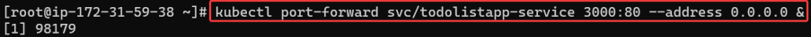
-
You can see the website via the port number 3000 from the public IP EC2 instance:
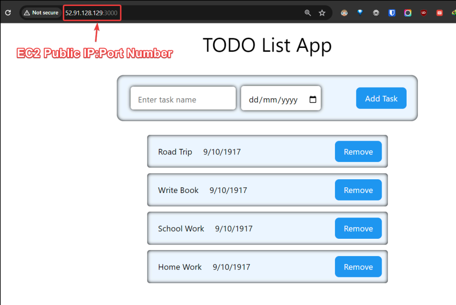
Please spend some time playing around with this simple To Do List App to celebrate your progress so 🎉🥳 far!
-
Let's list all events happening inside
hello-nodepod which provides details about the specific events associated with the Kubernetes pod :
kubectl describe pod todolistapp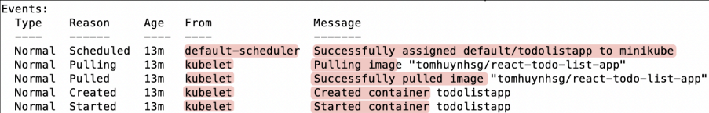
[Explanation]
The events show that Kubernetes scheduled the todolistapp Pod, pulled its image, created the container, and started it without errors.
Optional Minikube Dashboard Setup: The Minikube Dashboard is a graphical interface for managing and monitoring Kubernetes clusters, included with Minikube to simplify local development.
-
Open the Kubernetes dashboard in a browser:
minikube dashboard --url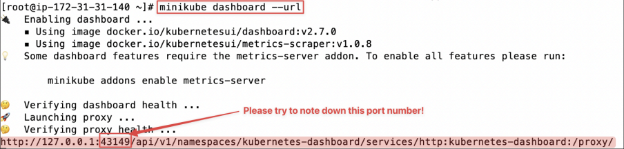
[Explanation]
Minikube starts up the Kubernetes Dashboard and prints out a URL like “
http://127.0.0.1:43149/
… ”
.This
indicates that the
dashboard
is
listening
on
port
43149
on the remote VM/EC2 instance.
Minikube
randomly
chooses
this
port
every time the dashboard is started.
Since the dashboard is only exposed on
127.0.0.1
inside the remote VM (the EC2 instance), you can’t just open your local browser and go to http://
<EC2 IP>
:43149. To access the K8s dashboard, you need to choose
either
option
A
(kubectl
proxy
method)
or
option
B
(SSH
port
forwarding
method)
🌐 Option A: Exposing the Dashboard with kubectl proxy
⚠ Important Security Warning: The following method is easier for a lab environment but is highly insecure. It exposes your entire Kubernetes cluster's control API to the network where the EC2 instance resides. Never use this method in a production environment. We are using it here strictly for learning purposes to avoid the complexity of SSH tunnels.
The kubectl proxy command can start a web server that allows us to access the Kubernetes API, including the dashboard. By default, it only listens on localhost, but we will tell it to listen on all network interfaces.
-
Start kubectl proxy on the EC2 Instance
-
--address='0.0.0.0' makes the proxy listen on all network interfaces, not just localhost. -
--accept-hosts='.*' allows your browser's hostname to connect. -
The & at the end will run it in the background so you can continue using the terminal.
-
kubectl proxy --address='0.0.0.0' --accept-hosts='.*' &-
Open Port 8001 in your EC2 Security Group
-
The proxy runs on
port 8001by default. You must open this port to access it from your browser. -
If you follow the instruction carefully, you should have already opened this
port 8081(within 3000-32767 range)
-
-
Access the Dashboard
-
Now, you can access the dashboard by combining your EC2 instance's public IP with the special dashboard URL:
-
http://<Your-EC2-Public-IP>:8001/api/v1/namespaces/kubernetes-dashboard/services/http:kubernetes-dashboard:/proxy/-
This will open the Kubernetes Dashboard directly. Note that the URL in your browser will now show your public IP, not localhost or
127.0.0.1.
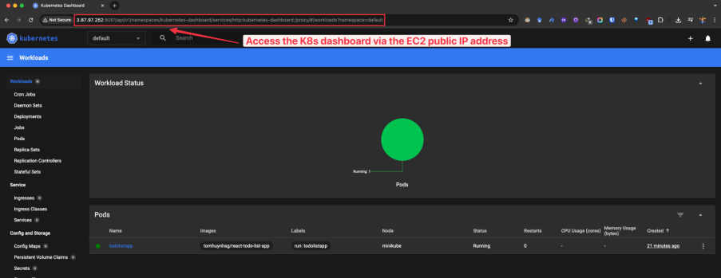
🔐 Option B: Exposing the Dashboard with SSH Port Forwarding
Alternatively, you can use an SSH tunnel to “forward” a local port on your own computer to that remote port on the VM.
-
[Open another terminal window] Try to create a SSH Tunnel using this command:
ssh -i [private key.pem] -L [local port]:localhost:[remote port of minikube dashboard] ec2-user@[ec2-public ip]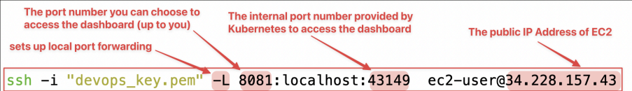
[Explanation] This command will forward any connections made to localhost:8081 (on your laptop) over SSH to localhost:43149 (on the remote EC2 instance).
-
Now, you can access to the dashboard by pasting the full dashboard url in your browser:
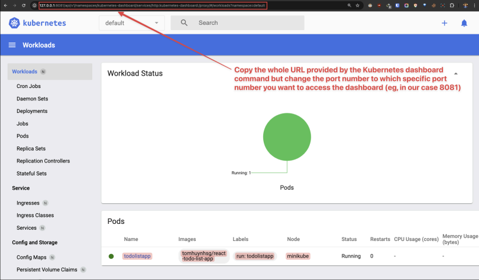
[Explanation]
Everything you do on localhost:8081 will be securely tunneled over SSH and mapped to
port 43149
on the remote EC2 instance, which is where the Minikube Dashboard is actually running.
🔎 After completing Option A or Option B to access the Kubernetes dashboard
Here are quite a lot of information you can learn more about your Minikube or Kubernetes nodes, services and
deployments
:
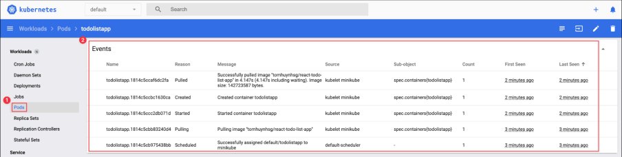
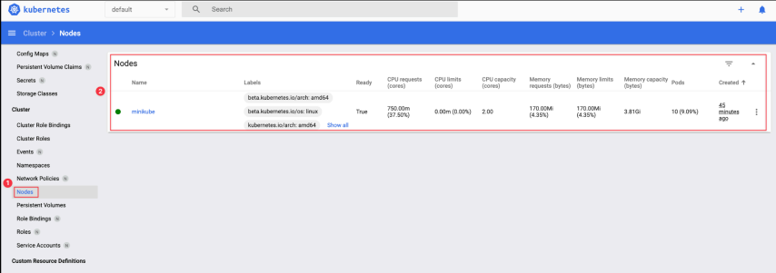
Please spend your time playing around with the dashboard before proceeding to the next steps!
Time to clean up everything to move on to the next project!
-
[Switching back to the first terminal] Now you can clean up the resources you created in your cluster:
kubectl delete service todolistapp-service
kubectl delete pod todolistapp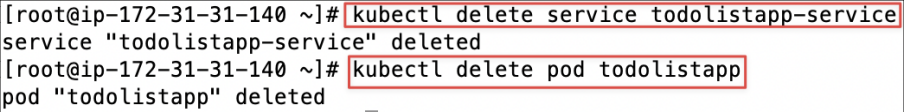
-
Stop the Minikube virtual machine (VM):
minikube stop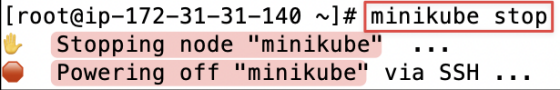
-
You can delete the whole cluster of Minikube by running this command:
minikube delete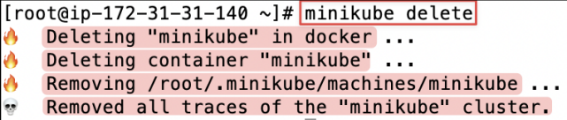
🗳️ 3. Deploy the voting application with Kubernetes manifests
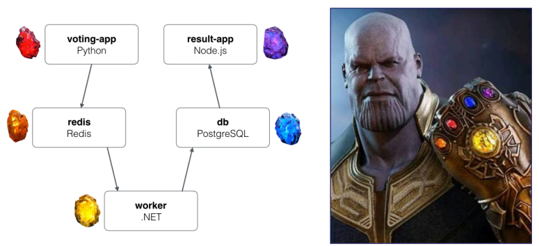
I hope you have fun so far! Let's recreate the voting application which we have practiced with
Docker
swarm in the previous lab. This time, we're gonna use
Kubernetes
manifest files to deploy this application.
The manifest is a specification of a Kubernetes API object in JSON or
YAML
format. A Kubernetes Manifest file is the heart of Kubernetes. These plaintext configuration files describe how a
pod
’s containers should be run and connected to other objects, such as
services
or replication controllers. You can learn about it here.
Manifest prediction: Before applying the YAML files, identify how Pod labels and Service selectors connect traffic to workloads. What result would you expect from a selector that matches no Pods?
-
Let's start a local Kubernetes cluster with minikube:
minikube start --force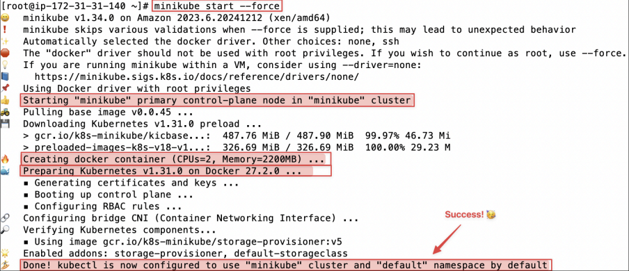
-
Next, clone the voting application from GitHub:
yum install git -y
git clone https://github.com/TomHuynhSG/simple-voting-application.git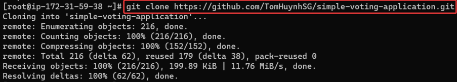
-
Let's change the current directory to the “kubernetes" directory in the GitHub repo:
cd simple-voting-application/kubernetes-
Let's list the YAML manifests needed to set up the voting app in Kubernetes:
ls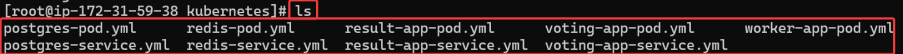
-
Let's launch the pod of the voting app website in the cluster using “
voting-app-pod.yml" file:
kubectl create -f voting-app-pod.yml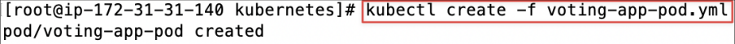
[Investigation]
Read the contents of
voting-app-pod.yml
manifest file for your learning:
apiVersion: v1
kind: Pod
metadata:
name: voting-app-pod
labels:
name: voting-app-pod
app: demo-voting-app
spec:
containers:
- name: voting-app
image: dockersamples/examplevotingapp_vote
ports:
- containerPort: 80-
List all
podsin the cluster:
kubectl get pods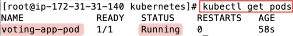
You can see there is a
voting-app
-pod which is created and running.
-
Describe the activity of all pods:
kubectl describe pods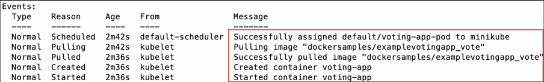
The event sequence shows that Kubernetes:
-
The task of creating pod “
voting-app-pod" is assigned to the minikube.-
Pulling the dockersamples/
examplevotingapp_votefrom the Docker Hub. -
Created and started the container
voting-appin the cluster.
-
-
List all nodes in the cluster:
kubectl get nodes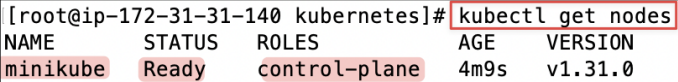
The Minikube control-plane node is running and ready.
-
Let's continue to create a
serviceto expose thevoting-app-pod which we just created to a public port number from the innerport 80of the node:
kubectl create -f voting-app-service.yml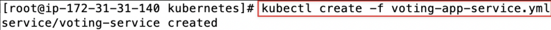
[Investigation]
Read the contents of
voting-app-pod.yml
manifest file for your learning:
apiVersion: v1
kind: Service
metadata:
name: voting-service
spec:
type: LoadBalancer
ports:
- port: 80
targetPort: 80
selector:
name: voting-app-pod
app: demo-voting-app-
Let's list all the services:
kubectl get services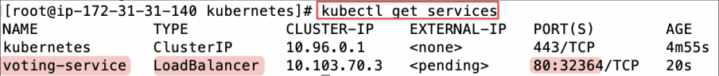
As you can see our new voting-service is a type of Load Balancer and open to the port number
[Extra
Info]
Service
Types:
NodePort
vs.
LoadBalancer
In this lab, you will encounter two types of Kubernetes Services to expose your applications:
-
NodePort : Exposes the service on a static port on each Node's IP address. It's a straightforward way to get external traffic into your cluster, making it great for development environments like the to-do list app.
-
LoadBalancer : This is the standard method for exposing a service to the internet on a cloud provider (like
AWSor GCP). When you create a service of this type, the cloud platform automatically provisions an external load balancer and assigns it a public IP.
[Extra
Info]
Why
is
the
EXTERNAL-IP
<pending>
?
-
Minikuberuns as a local, self-contained cluster and is not integrated with a cloud provider's infrastructure. Therefore, it cannot automatically provision an external load balancer. This is why theEXTERNAL-IPstatus remains<pending>. -
To get around this, Minikube provides a handy command: minikube service
<service-name>. This command creates a tunnel directly to the service inside the cluster, allowing you to access it.
Let’s continue!
-
Let’s retrieve the URL of the 'todolistapp-service' service running in your local Minikube environment, allowing you to interact with your voting app via a URL:
minikube service voting-service --url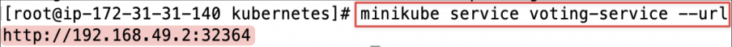
-
Let’s make an HTTP request to a web service running on a Minikube cluster to test if the voting website is actually working:
curl <the-voting-website-url>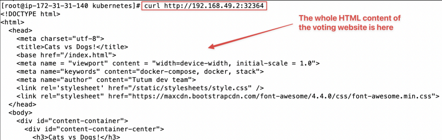
-
Forward requests from local
port 3001toport 80on the voting-service, accessible from all network interfaces:
kubectl port-forward svc/voting-service 3001:80 --address 0.0.0.0 &-
You can see the voting app website is running, which is hosted inside the
voting-app-pod in our cluster:
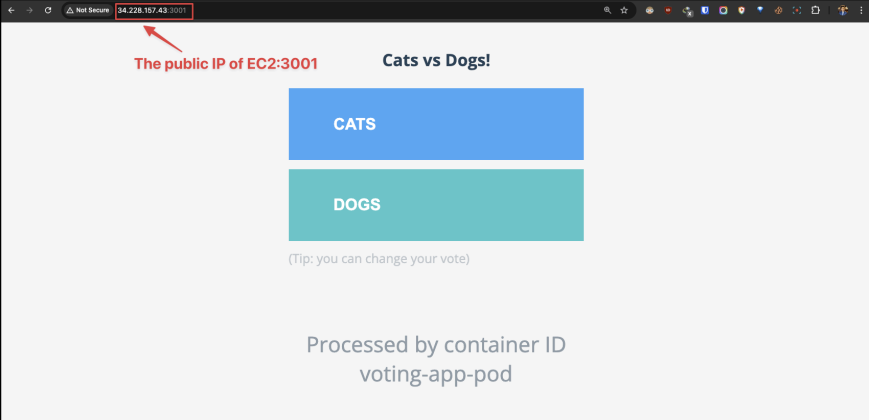
-
However, when you tried to click on the button “Dog" or “Cat" to vote, there would be an error “Internal Service Error" as the
voting-app-node tried to communicate with the redis container and failed to do so. This is just like the exact problem of our previous lab:
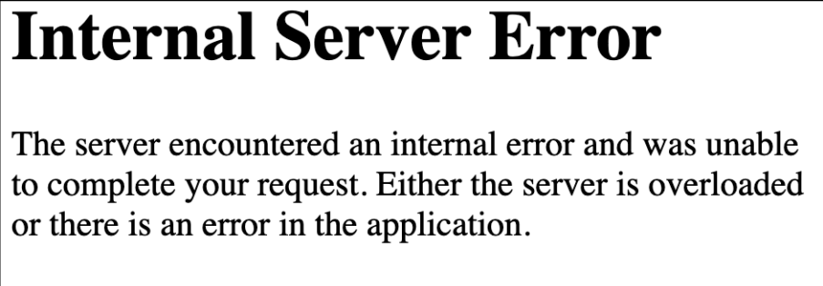

-
Let's resolve that problem so let's create the redis-pod using
redis-pod.ymlfile:
kubectl create -f redis-pod.yml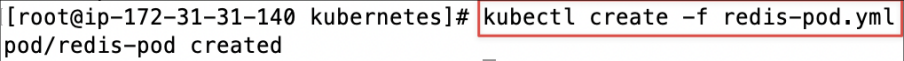
[Optional] Here is the content of
redis-pod.yml
manifest file for your learning:
apiVersion: v1
kind: Pod
metadata:
name: redis-pod
labels:
name: redis-pod
app: demo-voting-app
spec:
containers:
- name: redis
image: redis:latest
ports:
- containerPort: 6379-
Let's create a service for redis-pod to expose the node to an external port number:
kubectl create -f redis-service.yml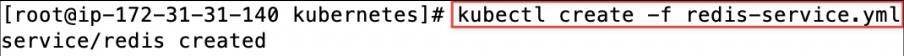
[Optional] Here is the content of
redis-service.yml
manifest file for your learning:
apiVersion: v1
kind: Service
metadata:
name: redis
labels:
name: redis-service
app: demo-voting-app
spec:
ports:
- name: redis
port: 6379
targetPort: 6379
selector:
name: redis-pod
app: demo-voting-app
-
Let's continue the routine and create the database postgres pod using
postgres-pod.yml:
kubectl create -f postgres-pod.yml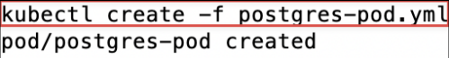
[Optional]
Here is the content of
postgres-pod.yml
manifest file for your learning:
apiVersion: v1
kind: Pod
metadata:
name: postgres-pod
labels:
name: postgres-pod
app: demo-voting-app
spec:
containers:
- name: postgres
image: postgres:9.4
env:
- name: POSTGRES_USER
value: "postgres"
- name: POSTGRES_PASSWORD
value: "postgres"
- name: POSTGRES_HOST_AUTH_METHOD
value: "trust"
ports:
- containerPort: 5432POSTGRES_HOST_AUTH_METHOD=trust disables password checks for matching connections. Do not use it in production; use a Kubernetes Secret and password authentication instead.-
Let's create a Service for the Postgres Pod so other components can reach it:
kubectl create -f postgres-service.yml
[Optional]
Here is the content of
postgres-service.yml
manifest file for your learning:
apiVersion: v1
kind: Service
metadata:
name: db
labels:
name: db-service
app: demo-voting-app
spec:
ports:
- port: 5432
targetPort: 5432
selector:
name: postgres-pod
app: demo-voting-app-
Let's continue the routine and create the worker app pod using
worker-app-pod.yml:
kubectl create -f worker-app-pod.yml
[Optional] Here is the content of
worker-app-pod.yml
manifest file for your learning:
apiVersion: v1
kind: Pod
metadata:
name: worker-app-pod
labels:
name: worker-app-pod
app: demo-voting-app
spec:
containers:
- name: worker-app
image: dockersamples/examplevotingapp_worker-
Let's create the result app pod using
result-app-pod.yml:
kubectl create -f result-app-pod.yml
[Optional] Here is the content of
result-app-pod.yml
manifest file for your learning:
apiVersion: v1
kind: Pod
metadata:
name: result-app-pod
labels:
name: result-app-pod
app: demo-voting-app
spec:
containers:
- name: result-app
image: dockersamples/examplevotingapp_result
ports:
- containerPort: 80-
Let's create a service for
result-app-pod to expose the node to an external port number so we can access the result app website via a public port number:
kubectl create -f result-app-service.yml
[Optional]
Here is the content of
result-app-service.yml
manifest file for your learning:
apiVersion: v1
kind: Service
metadata:
name: result-service
labels:
name: result-service
app: demo-result-app
spec:
type: LoadBalancer
ports:
- port: 80
targetPort: 80
selector:
name: result-app-pod
app: demo-voting-app-
Let's list all pods and repeat this command until all of the pods are running:
kubectl get podsAs you can see all five pods are up and running in the cluster.
-
Let's list all services in the cluster:
kubectl get servicesAs you can see, we have two services result-service and voting-service which expose the result app website and the voting app website to be accessible via port numbers. We can use those port numbers to access the websites on the browser.
-
Forward requests from local
port 3002toport 80on the result-service, accessible from all network interfaces:
kubectl port-forward svc/result-service 3002:80 --address 0.0.0.0 &-
The result application should now be available on the forwarded port:
That is a great success of deploying the voting application in the Kubernetes cluster!
[Question] However, now you might ask if there is any easy way to deploy all of the nodes in one go instead of running the yaml file one by one.
-
Let’s clean up all pods and services. First, you can delete all pods:
kubectl delete pods --all-
Let's list all pods, and you should see if all five pods have been deleted:
kubectl get pods-
Then delete all services:
kubectl delete services --all-
Let's list all services, and you should see if all services have been deleted:
kubectl get services-
For a multi-component application like this, applying each manifest file individually is inefficient. A much better practice is to apply all manifest files in a directory at once. Let's deploy the entire voting application with a single command:
-
Now, to quickly deploy all nodes in one go again without running each yaml file, you can use this command to for
kubectlto run all yaml files in the current directory and execute all yaml files in one go to create all five pods and their services:
-
kubectl create -f .-
Let's list all pods, and you should see all five pods up and running:
kubectl get pods-
Let's list all pods, and you should see all five services up and running:
kubectl get services-
You can try to redo the steps (option A or option B) to launch the Kubernetes dashboard again to investigate more about those pods:
-
In a similar manner, you can delete all pods by running this command by telling kubectl to find all yaml files in the current directory and remove all pods mentioned in them:
kubectl delete -f .-
Let's list all pods again, and you should see all pods have been removed:
kubectl get pods-
Let's list all services again, and you should see all services have been removed except kubernetes service:
kubectl get services-
Feel free to stop the Minikube virtual machine (VM):
minikube stop-
You can also delete the whole cluster of Minikube to wrap up this tutorial lab:
minikube deleteNicely done! Amazingly good job! You have learned one of the most difficult topics in DevOps! This 🏆🥇🎉👏 is just the basics of Kubernetes with Minikube ! In the next lab, we will up our game and learn about EKS (Elastic Kubernetes Service) in AWS, which will manage our Kubernetes cluster with more ease in the real production!
🌐 4. Bonus: Kubernetes online labs
Play with
Kubernetes
is a labs site provided by
Docker
and created by Tutorius.
-
Open this link: https://labs.play-with-k8s.com/ .
-
You can log in with either a GitHub or Docker account. Then press the “Start” button!
-
Start the interactive session and follow this Kubernetes tutorial: https://training.play-with-kubernetes.com/kubernetes-workshop/
🌐 5. Bonus: Docker Swarm online lab
![Screenshot illustrating 5. [Bonus] Docker Swarm Online Lab from Docker](../assets/tutorials/week-10/08-5-bonus-docker-swarm-online-lab-001.png)
In case you want to revise and work on your docker swarm skills for assignment 3, please follow this very short fun learning labs for
Docker
swarm from Docker:
-
Open this link: https://training.play-with-docker.com/ops-s1-swarm-intro/
-
Have fun! Always be learning!
Here are some fun memes about
Kubernetes
to reward yourself after a long day of learning Kubernetes: